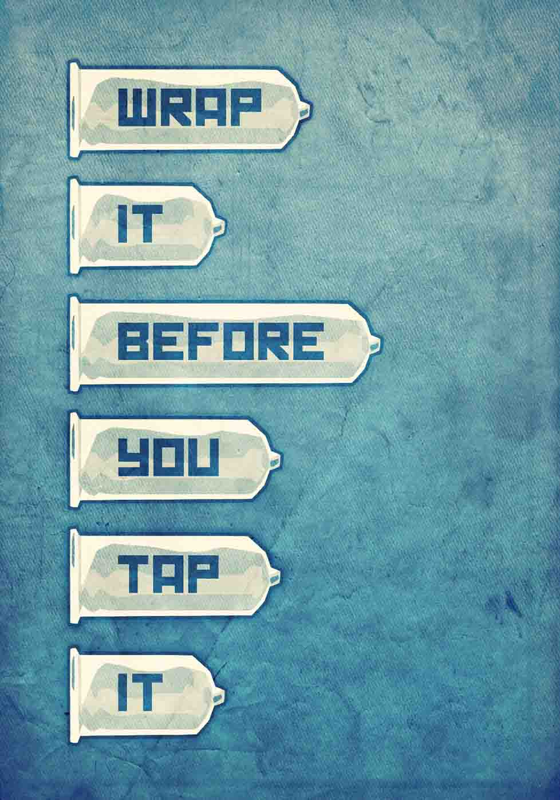

To avoid HIV infection and sexually transmitted diseases (STDs), a condom is the first line of defense. It forms a barrier between the penis and anus, vagina, or mouth. Bodily fluids cannot get past it.
For safer oral sex, there are dental dams.
Lower-risk sex play includes kissing and fondling. There's no-risk sex play too, like masturbation (alone or mutual) and sharing fantasies.
Safe sex can be fun. It prompts exploration, reduces worry, and enhances trust. And no prescription is needed.
